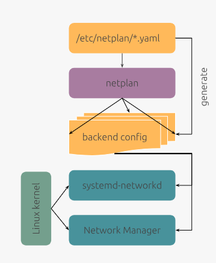

NETPLAN
INTRODUCCIÓN
Netplan es una herramienta desarrollada por Canonical, la empresa responsable de Ubuntu. Su finalidad es simplificar la administración de la configuración de red proporcionando una capa de abstracción sobre los dos sistemas de gestión de red más utilizados actualmente en Linux: systemd-networkd y NetworkManager.
En lugar de configurar directamente estos servicios, el administrador define la configuración de red en uno o varios archivos con formato YAML. Netplan interpreta dichos archivos y genera automáticamente la configuración equivalente para el backend seleccionado.
Los archivos de configuración de Netplan tienen la extensión .yaml y se pueden encontrar en las siguientes ubicaciones:
/etc/netplan/: Directorio principal donde se almacenan los archivos de configuración./lib/netplan/: Directorio utilizado por el sistema para almacenar archivos de configuración predeterminados./run/netplan/: Directorio temporal utilizado para almacenar archivos de configuración generados dinámicamente a partir de la configuración de los otros directorios.
Dentro de estos directorios, los archivos de configuración suelen tener nombres descriptivos que indican su propósito o el tipo de red que configuran. Por ejemplo, un archivo llamado 01-netcfg.yaml podría contener la configuración de red principal del sistema. El orden de procesamiento de los archivos de configuración se basa en el orden alfabético, por lo que los archivos con nombres que comienzan con números más bajos se procesan antes que aquellos con nombres que comienzan con números más altos. Se aplican todas las configuraciones definidas en los archivos, y si hay conflictos, la última configuración aplicada prevalecerá.
Es preferible utilizzar varios archivos de configuración para diferentes interfaces de red o propósitos, en lugar de un único archivo grande. Esto facilita la administración y el mantenimiento de la configuración de red, ya que permite realizar cambios específicos sin afectar a otras configuraciones.
Arquitectura de Netplan
La arquitectura de Netplan se puede representar mediante un diagrama que muestra cómo los archivos de configuración YAML interactúan con Netplan y los backends de red subyacentes. A continuación, se presenta un diagrama que ilustra esta arquitectura:

Los componentes principales de la arquitectura de Netplan son los siguientes:
- Archivos de configuración YAML: Los archivos de configuración de Netplan se escriben en formato YAML y se encuentran en los directorios mencionados anteriormente. Estos archivos contienen la información necesaria para configurar la red, como direcciones IP, puertas de enlace, servidores DNS y otras opciones de red.
- Netplan: Netplan es la herramienta que interpreta los archivos de configuración YAML y genera la configuración equivalente para el backend seleccionado. Netplan proporciona una interfaz unificada para administrar la configuración de red, independientemente del backend utilizado.
- Backends: Netplan admite dos backends principales: systemd-networkd y NetworkManager. Estos backends son responsables de aplicar la configuración de red generada por Netplan según el backend seleccionado.
- Servicios de red: Los servicios de red son los componentes que realmente aplican la configuración de red en el sistema. Estos servicios se encargan de establecer la configuración de red dependiendo del backend seleccionado y de mantener la conectividad de red en el sistema.
CONFIGURACIÓN DE LA RED
ARCHIVOS DE CONFIGURACIÓN
La estructura básica de un archivo de configuración de Netplan se organiza en secciones jerárquicas, donde cada sección define diferentes aspectos de la configuración de red. A continuación, se describen las secciones principales:
network:
version: 2
renderer: [networkd | NetworkManager]
ethernets:
[<nombre-interfaz>]:
[<parametro>: <valor>]
...
...
A continuación, se describen los elementos del archivo de configuración:
- network: Es la sección raíz que indica que se está configurando la red.
- version: Especifica la versión de la sintaxis de Netplan que se está utilizando. Actualmente, la versión recomendada es la 2.
- renderer: Define el backend que se utilizará para aplicar la configuración de red. Puede ser
networkd(para systemd-networkd) oNetworkManager(para NetworkManager). Generalmente, se recomienda utilizarnetworkdpara servidores yNetworkManagerpara entornos de escritorio. - ethernets: Especifica la configuración de las interfaces de red Ethernet. Cada interfaz se define mediante su nombre y se pueden establecer diferentes parámetros, como direcciones IP, puertas de enlace, servidores DNS, etc. Se pueden utilizar expresiones de comodín para definir múltiples interfaces con la misma configuración y definir más de una interfaz en el mismo archivo de configuración.
Los parámetros más comunes que se pueden configurar en las interfaces de red incluyen: - dhcp4: Activa o desactiva el protocolo DHCP para la configuración de direcciones IP en IPv4.
- dhcp6: Activa o desactiva el protocolo DHCP para la configuración de direcciones IP en IPv6.
- addresses: Define las direcciones IP fijas que se asignarán a la interfaz.
- gateway4: Especifica la puerta de enlace por defecto para IPv4 (obsoleto).
- gateway6: Especifica la puerta de enlace por defecto para IPv6 (obsoleto).
- nameservers: Define los servidores DNS que se utilizarán.
- routes: Permite definir rutas estáticas adicionales para la interfaz.
- link-local: Controla si Netplan permite que una interfaz configure direcciones link-local, es decir, direcciones que sólo son válidas dentro del segmento de red local (no se enrutan). Por defecto, Netplan permite la configuración de direcciones link-local en todas las interfaces, pero se puede desactivar estableciendo
link-local: []en la configuración de la interfaz. - mtu: Permite establecer el tamaño máximo de la unidad de transmisión (MTU) para la interfaz. El valor predeterminado es 1500 bytes, pero se puede ajustar según las necesidades de la red.
- macaddress: Permite establecer una dirección MAC específica para la interfaz. Esto puede ser útil en situaciones donde se requiere una dirección MAC fija, como en entornos de virtualización o para cumplir con políticas de seguridad de red.
CONFIGURACIÓN ESTÁTICA
CONFIGURAR IP Y PUERTA DE ENLACE
Para la interfaz de red considerada, se puede configurar una dirección IP estática y una puerta de enlace predeterminada. Esto se logra ajustando los parámetros adecuados de la sección ethernets del archivo de configuración YAML de Netplan.
Configuración estática
Configurar la interfaz de red enp0s3 con una dirección IP estática de 192.168.1.10/24 y la puerta de enlace de 192.168.1.1. El backend utilizado será networkd.
network:
version: 2
renderer: networkd
ethernets:
enp0s3:
addresses:
- 192.168.1.10/24
gateway4: 192.168.1.1
El parámetro gateway4 se considera obsoleto; en su lugar hay que añadir la ruta por defecto a la tabla de enrutamiento. Para ello, se puede utilizar la sección routes del archivo de configuración YAML de Netplan.
Configuración de ruta por defecto
Configurar la ruta por defecto en el supuesto del ejemplo anterior.
network:
version: 2
renderer: networkd
ethernets:
enp0s3:
addresses:
- 192.168.1.10/24
routes:
- to: default
via: 192.168.1.1
En los sistemas Debian no se reconoce la ruta por defecto con la sintaxis to: default, por lo que se debe utilizar la sintaxis to: 0.0.0.0/0.
CONFIGURAR SERVIDORES DNS
El parámetro nameservers permite definir los servidores DNS que se utilizarán para la resolución de nombres de dominio. Se pueden especificar múltiples servidores en una lista o en líneas separadas.
Configuración de servidores DNS
Configurar la interfaz enp0s8 con ip la ip estática 192.168.3.200/25, puerta de enlace 192.168.3.1 y servidores DNS 8.8.8.8 y 8.8.4.4. El backend utilizado será NetworkManager.
network:
version: 2
renderer: NetworkManager
ethernets:
enp0s8:
addresses:
- 192.168.3.200/25
routes:
- to: default
via: 192.168.3.1
nameservers:
addresses: [8.8.8.8, 8.8.4.4]
El parámetro nameservers se podría haber definido de la siguiente manera:
...
nameservers:
addresses:
- 8.8.8.8
- 8.8.4.4
...
El parámetro nameservers también permite definir un nombre de dominio de búsqueda (search domain) que se utilizará para completar nombres de host no calificados. Esto se puede hacer utilizando la opción search dentro de la sección nameservers.
CONFIGURACIÓN DINÁMICA
CONFIGURACIÓN DEL DIRECCIONAMIENTO IP
Para configurar una interfaz de red para obtener su dirección IP se utilizan los parámetros dhcp4 y dhcp6. Estos parámetros permiten habilitar o deshabilitar el uso de DHCP para la configuración de direcciones IP en IPv4 e IPv6, respectivamente.
El parámetro dhcp6solo tiene sentido si hay un servidor DHCP que pueda asignar direcciones IPv6 en la red. En caso contrario, se puede omitir o establecer en false. Aún así, es probable que el sistema genere una dirección IPv6 link-local automáticamente para la interfaz, incluso si dhcp6 está deshabilitado. Aquí es donde entra en juego el parámetro link-local, que controla si Netplan permite que una interfaz configure direcciones link-local. Estableciéndolo a link-local: [] no se generarán direcciones link-local para esa interfaz y ya no se mostrará la dirección IPv6 en la salida del comando ip addr.
Configuración de direccionamiento dinámico
Configurar la interfaz de red enp0s3 para obtener su dirección IPv4 mediante DHCP y deshabilitar la obtención de direcciones IPv6 mediante DHCP. Además, se deshabilita la generación de direcciones link-local para esta interfaz. El backend utilizado será networkd.
network:
version: 2
renderer: networkd
ethernets:
enp0s3:
dhcp4: true
dhcp6: false
link-local: []
La cláusula dhcp4-overrides permite modificar el comportamiento del cliente DHCP para IPv4 (e IPv6). Por ejemplo, se puede utilizar para deshabilitar la obtención de la puerta de enlace y servidores DNS mediante DHCP. En estos casos, las correspondientesopciones utilizadas en la configuración estática son las que se utilizarán.
CONFIGURACIÓN DE SERVIDORES DNS
Cuando configuramos una interfaz de red para obtener su dirección IP mediante DHCP, los servidores DNS también se pueden obtener automáticamente del servidor DHCP. No obstante, se pueden especificar servidores DNS adicionales mediante la opción nameservers , o reemplazar los obtenidos mediante DHCP utilizando además la opción dhcp4-overrides para IPv4 o dhcp6-overrides para IPv6. Esto permite tener un control más preciso sobre los servidores DNS utilizados por la interfaz de red.
Ignorar los servidores DNS obtenidos mediante DHCP
Configurar la interfaz de red enp0s3 para obtener su dirección IPv4 mediante DHCP, pero ignorar los servidores DNS obtenidos mediante DHCP y utilizar en su lugar los servidores 10.100.0.2 y 1.1.1.1. A continuación se muestra parcialmente el archivo de configuración YAML correspondiente.
network:
...
enp0s3:
dhcp4: true
dhcp4-overrides:
use-dns: false
nameservers:
addresses: [10.100.0.2, 1.1.1.1]
...
Especificar servidores DNS adicionales a los obtenidos mediante DHCP
Configurar la interfaz de red enp0s3 para obtener su dirección IPv4 mediante DHCP, pero especificar servidores DNS adicionales a los obtenidos mediante DHCP de ip 10.100.0.2 y 1.1.1.1. A continuación se muestra parcialmente el archivo de configuración YAML correspondiente.
network:
...
enp0s3:
dhcp4: true
dhcp4-overrides:
use-dns: true
nameservers:
addresses: [10.100.0.2, 1.1.1.1]
...
No es necesario especificar la opción dhcp4-overrides para IPv4 ya que por defecto se utiliza use-dns: true.
Especificar servidores DNS adicionales a los obtenidos mediante DHCP
El siguiente ejemplo es equivalente al ejemplo anterior, pero sin especificar la opción dhcp4-overrides.
network:
...
enp0s3:
dhcp4: true
nameservers:
addresses: [10.100.0.2, 1.1.1.1]
...
TABLA DE ENRUTAMIENTO
Las rutas estáticas adicionales se pueden definir en la sección routes del archivo de configuración YAML de Netplan. Esto permite especificar rutas específicas para ciertos destinos de red, además de la ruta por defecto.
Configuración de rutas estáticas adicionales
Configurar la interfaz de red enp0s3 con dos rutas estáticas adicionales: una para la red 192.168.3.0/25 y otra para la red 192.168.3.128/25 a través de la puerta de enlace 192.168.5.254. Configurar la interfaz de red enp0s8 con una ruta por defecto a través de la puerta de enlace 192.168.4.1. A continuacción se muestra una visión parcial del archivo de configuración YAML correspondiente.
network:
...
ethernets:
...
enp0s3:
...
routes:
- to: 192.168.3.0/25
via: 192.168.5.254
- to: 192.168.3.128/25
via: 192.168.5.254
enp0s8:
...
routes:
- to: default
via: 192.168.4.1
GESTIÓN DE LA RED E INTERFACES
Para administrar la configuración de red y las interfaces de red en Netplan se la interfaz de línea de comandos (CLI) llamada netplan. Esta herramienta permite consultar el estado de las interfaces de red, aplicar cambios en la configuración y generar la configuración equivalente para el backend seleccionado.
A continuación, se presentan algunos de los comandos más comunes que se pueden utilizar con la herramienta netplan:
-
netplan generate
Genera los archivos de configuración para el renderizador elegido (networkd o NetworkManager) a partir de los archivos YAML de netplan. Este comando debe ejecutarse como administrador. -
netplan try
Prueba una nueva configuración de netplan y vuelve a la anterior si no se confirma en 120 segundos. Este comando debe ejecutarse como administrador. -
netplan apply
Aplica la configuración actual de netplan al sistema, activando las interfaces de red, agregando rutas, etc. Este comando debe ejecutarse como administrador. -
netplan status [--all] [{--format | -f}
]
Muestra el estado de todas las interfaces activas en un formato amigable para las personas. Con el parámetro--alltambién muestra las interfaces inactivas. Con la opción<format>podemos hacer que la información se visualice en formato JSON o YAML. -
netplan status
Muestra el estado de la interfaz dada.Mostrar el estado de una interfaz de red
Para mostrar el estado de la interfaz de red
enp0s3, se puede utilizar el siguiente comando:u1@ubuntu-ws1:~$ netplan status enp0s3 Online state: offline DNS Addresses: 127.0.0.53 (stub) DNS Search: . ● 2: enp0s3 ethernet UP (networkd: enp0s3) MAC Address: 08:00:27:f8:16:fd (Intel Corporation) Addresses: 192.168.4.10/24 fe80::a00:27ff:fef8:16fd/64 (link) Routes: default via 192.168.4.1 (static) 192.168.4.0/24 from 192.168.4.10 (link) fe80::/64 metric 256 1 inactive interfaces hidden. Use "--all" to show all. -
netplan set <propiedad=valor>
Es un comando que permite modificar la configuración de Netplan desde la línea de comandos sin editar manualmente los archivos YAML. Internamente hace lo siguiente: localiza o crea un archivo de configuración en /etc/netplan/, inserta o modifica la clave YAML correspondiente, valida la sintaxis y guarda la configuración. Este comando debe ejecutarse como administrador y los cambios realizados se aplicarán al sistema después de ejecutar el comandonetplan apply.Cambiar configuración de una interfaz de red
Cambiar la mac de la interfaz
enp0s8por la mac 08:00:27:aa:aa:aa.u1@ubuntu-ws1:~$ sudo netplan set ethernets.enp0s8.macaddress=08:00:27:aa:aa:aa u1@ubuntu-ws1:~$ sudo netplan applyTambién se puede configurar varias propiedades a la vez y parámetros compuestos.
Cambiar propiedad compuesta de una interfaz de red
Configurar la interfaz
eth0para que reciba ip mediante DHCP (ipv4 y ipv6).u1@ubuntu-ws1:~$ sudo netplan set ethernets.eth0='{dhcp4: true, dhcp6: true}' -
netplan get [<propiedad>]
Este comando permite obtener el valor correspondiente a una propiedad o clave dada. Si se invoca sin argumentos, devuelve la configuración completa en formato YAML.Obtener la dirección IP de una interfaz de red
Obtener la dirección IP de la interfaz
enp0s3.u1@ubuntu-ws1:~$ netplan get ethernets.enp0s3.addresses - "192.168.1.10/24"
Al respecto de la activación y desactivación de interfaces, netplan no provee ningún comando. Por lo tanto, se deben utilizar los comandos del gestor de red que se esté utilizando; networkd o NetworkManager.Netplan tampoco provee comandos para el enrutamiento ni para la traducción de direcciones NAT. Se utilizarán las técnicas apropiadas según el gestor de red utilizado.